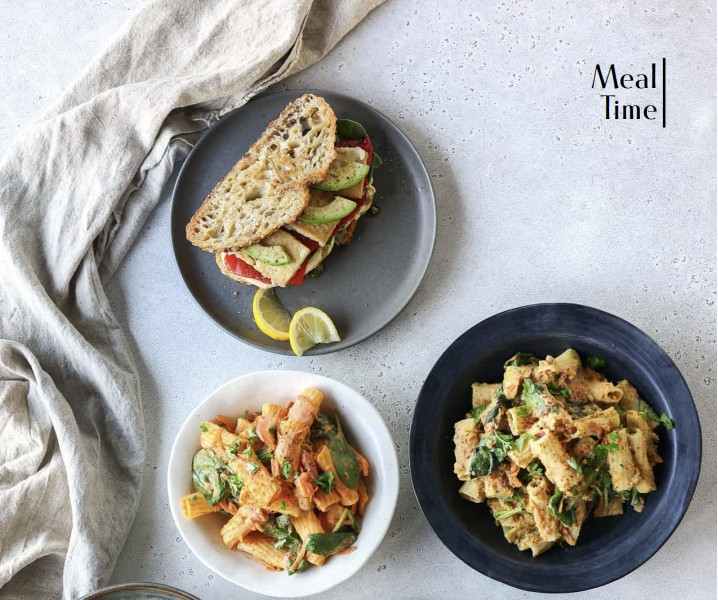
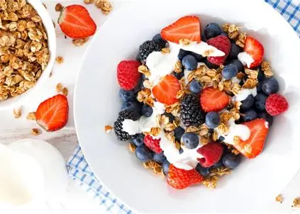
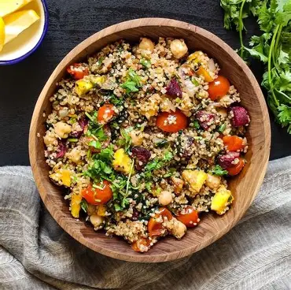

Healthy Granola:
Ingredients:
Dry Ingredients
- ⅓ cup + 2 Tbsp (42g) rolled oats
- 1 Tbsp + ¾ tsp (12g) raw almonds, roughly chopped
- 1 Tbsp + ¾ tsp (10g) raw cashews, roughly chopped
- 1 Tbsp + ¾ tsp (11g) raisins
- 1¾ tsp (5g) dried cranberries
- 1¾ tsp (5g) raw sunflower seeds
- 1¾ tsp (6g) raw pumpkin seeds
- 1¾ tsp (3.5g) unsweetened shredded coconut
- 1 pinch ground cinnamon
- 1 pinch salt (optional)
- Wet ingredients
- 2 Tbsp + 1½ tsp (28g) Medjool dates, pits removed
- =1 Tbsp + ¾ tsp (20g) tahini
- 1¾ tsp (9ml) water, plus more as needed


Chili Lime Quinoa Black Bean Salad (Vegan and Gluten Free)
Ingredients:
For the Quinoa Salad:
- Quinoa – A naturally gluten-free grain that’s a good source of complete protein and complex carbohydrates
- Sweet bell pepper – any color will work
- Red onion – may substitute yellow onion
- Grape or cherry tomatoes – may substitute diced tomato of any variety
- Black beans
- Cilantro – In addition to cilantro, we like to add a little fresh basil if we have it on hand
- Corn – fresh (cooked), canned, or frozen
- Avocado – diced
- Feta Cheese or cojita cheese – optional, omit for dairy-free and vegan
For the Vinaigrette:
- Avocado oil or olive oil – we like Primal Kitchen Foods oils
- Lime juice – you’ll need about two small to medium limes for this recipe
- Ground cumin
- Garlic powder – may substitute one clove garlic, minced
- Chili powder – add a pinch of cayenne pepper for a little heat if you please
- Fine salt
